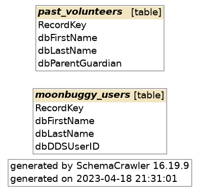
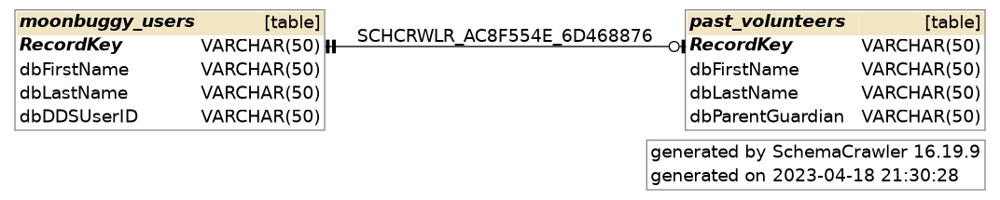

Hey, my name is
Daniel Harnden.
I'm an aspiring software engineer with a Bachelor's degree in Computer Science with a concentration in Data Science from Tennessee Technological University.
website currently under construction :(
Data Prometheus
My capstone project, Data Prometheus is an automatic database merging tool that combines multiple minor databases into a singular primary database and returns a schema image of the new database.
Below is a very simplified example of a database being joined. The first image is the database pre-processing. Even though the tables share three keys, they have no foreign key relationships.
↓
Post-processing, the RecordKey key in the past_volunteers table is identified as a foreign key of RecordKey in moonbuggy_users. More examples of Data Prometheus processing be found here.
Real-Time Train Crowding Forecast
A project for my Advanced Data Science class, Real-Time Train Crowding Forecasting uses historical data provided by SNCR-Transilien, a French transit company, to predict a given train's crowding factor, which is defined as the ratio of pasengers on a train relative to its total possible capacity. Our supervised machine learning algorithm uses the crowding factor of previous trains at the current station and the crowding factor of the current train at previous stations to predict train occupancy rates in real time.
My group's research was presented at Tennessee Technological University's 2023 Research and Creative Inquiry Day, and our code can be found here. The poster we presented at Research Day is below (click to view a larger version).

Games
I like to make games in my free time using Unity and C#. Many of my game demos are either unfinished or under construction spanning various genres including 2D platformers, point and click visual novels, and first person shooters.
One of my public demos is Clippy Commando, a twin stick shooter made for itch.io's "Jame Gam #18" game jam. You can view the source code here.
Literature
I also like to do creative writing in my free time. The only public story right now is Memories of the Bean Times, a story about monsters made of baked beans attacking medieval Europe. It's around 100,000 words and still ongoing. To make the story public, I created a website using HTML, CSS, and JavaScript, and am hosting it using GitHub Pages. You can find the source code here.